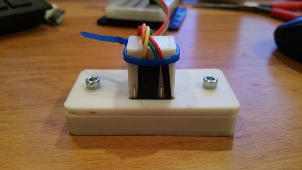
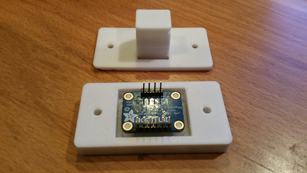

By Tycho

Task: Improve our 3D Printable case for the Adafruit BNO055 IMU
Last week I designed a case for our IMU sensor in Creo and wrote up how it could be improved. I've fixed most of those issues and we are ready to share the results. There is one version with Tetrix hole spacing and another that works for Actobotics channels. Either can be used with aluminum extrusions though you might have to drill out the mounting holes depending on your bolt size.
You can download the STLs. The Creo models are available on request - just ask in the disqus below.
Reflections


My first write-up showed a number of issues. Here's how those issues were addressed:
- There were measurement errors. I guess I need to work on my caliper skills. This time I found a diagram of the board's designed dimensions that removed these errors.
- I did make errors by not properly using centerlines for mirroring features in my sketches. Cleaned that up.
- I made the pins on the standoffs smaller to reduce the time needed to clean them up for a proper fit. Now a minute of filing top layer sloppiness makes for a nice snap-on fit. The sensor presses right into place. We tried it with two different IMUs. This is optimized for our Ekocycle Cube, so might not be the right solution for other printers.
- Added a separate set of print files for Actobotics mounting.
- The bolt holes were widened so we don't have to drill them out for 6/32 bolts.
- Added a strain relief column for the sensor wires going back to the DCIM. The column contains a groove to secure a ziptie.
- We don't have good data on whether heat build up could become a problem.
- This design is meant to be mounted to the underside of a structural beam if you want the sensor to maintain its standard notion of "up". You can always change that definition in code if you need to mount it with the wires coming out the top.
We hope this design proves useful and please let us know if you can think of any improvements.